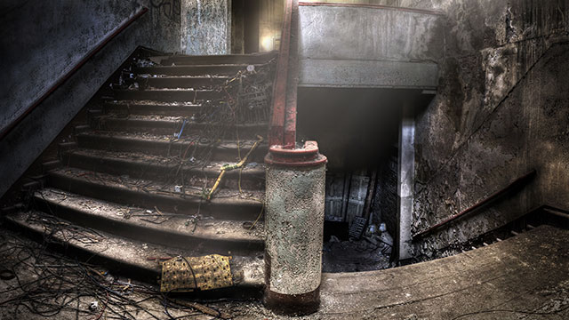

A Spooky Start
You took a deep breath before open the door, after you are inside the house, the door suddenly shut. You thought it must be one of your friends' tricks, but it still make you nervous. Right now there's two options, upstairs to search for a window go get out; or downstairs to try to find a key of this house 